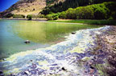
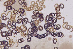
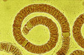

Nodularia
Nodularia spumigena
Other names
blue green algae
Description
Algae are coiled filaments, each consisting of a chain of cells. The coils are up to 1mm long and less than 0.01mm wide. The coils have a knobbly appearance when forming spores. The algae produces gas bubbles. Grossly the water appears green, murky, foamy with accumulations of purplish rotting algae and has a characteristic smell.
Similar plants
Other blue green algae.
Distribution
Thermal regions of lake Rotorua, dune lakes in Northland and West Coast of the North Island, Lakes Forsyth and Ellesmere in Canterbury.
Toxin
Contains an hepatotoxin which has potent effects on the liver with tiny quantities having a lethal effect in hours. Very small quantities over a period of time promote cancers. When washed ashore the algae can rot causing the release of toxins.
Species affected
All species susceptible. Reported cases in cattle, dogs and sheep.
Clinical signs acute
Sudden death.
Clinical signs chronic
Post mortem signs
Diagnosis
History and clinical signs. Some laboratories are able to assay for the toxins, or microscopic examination may reveal the cyanobacteria.
Differential diagnosis
Other hepatotoxic compounds or poisons that cause sudden death e.g. yew, oleander etc.
Treatment
Animals are often found dead or die before treatment can be given.
Prognosis
Poor, lethal effects in hours.
Prevention
Avoid contaminated water.
References
Wood, S. (2001) Cyanobacteria an underestimated risk to animal health in New Zealand? Vetscript, December 2001, pp4 5.
 bloom |
 |
|
|
|
 |
|
|
|
||
|
|
|
|